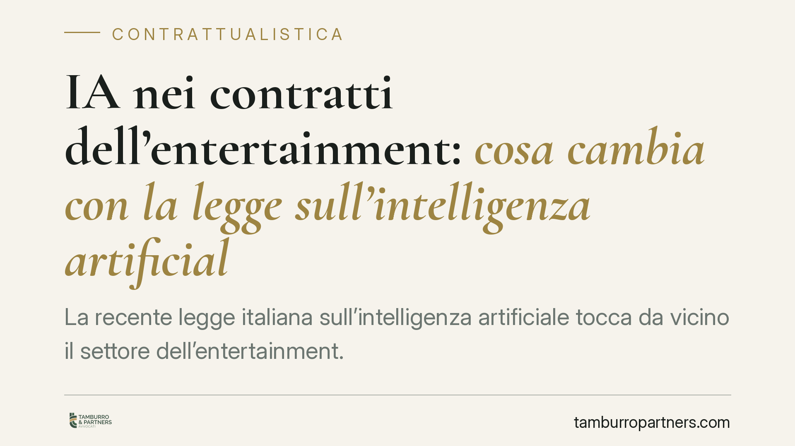

IA nei contratti dell'entertainment: cosa cambia con la legge sull'intelligenza artificiale
La recente legge italiana sull'intelligenza artificiale tocca da vicino il settore dell'entertainment. Cambiano gli equilibri contrattuali su titolarità dei diritti d'autore, uso di contenuti generati da IA e accesso agli incentivi audiovisivi. Sul fronte penale, viene introdotto un nuovo reato per la diffusione ingannevole di deepfake. Produttori, editori, autori e artisti devono rivedere modelli e clausole.

Il quadro: perché la legge sull'IA riguarda l'entertainment
La legge italiana sull'intelligenza artificiale interviene su un settore in cui la generazione automatica di testi, immagini, voci e volti è ormai prassi produttiva. Per lo studio, l'impatto più concreto non è teorico ma contrattuale: la ripartizione dei diritti tra chi apporta creatività umana e chi utilizza strumenti di IA va scritta nero su bianco.
Una premessa di metodo. Alcuni riferimenti numerici che circolano in queste settimane (numero e data della legge, articolo esatto del codice penale, decreti sul tax credit) vanno verificati sul testo pubblicato in Gazzetta Ufficiale prima di essere richiamati in un atto. In questa sede indichiamo gli istituti; per le citazioni puntuali rinviamo alla verifica sulla fonte ufficiale aggiornata.
Titolarità dei diritti: il nodo della creatività umana
Il punto di partenza resta l'art. 1 della legge sul diritto d'autore (l. 633/1941), che tutela le opere dell'ingegno di carattere creativo. La tutela autorale presuppone un apporto creativo umano: un output puramente automatico, privo di scelte espressive riconducibili a una persona, difficilmente accede alla protezione piena.
Da qui la centralità della cosiddetta soglia di creatività: quanto più l'IA è mero strumento nelle mani dell'autore (prompt elaborati, selezione, editing, direzione creativa), tanto più è difendibile la titolarità. Quando invece il contributo umano è marginale, il regime di protezione si indebolisce e con esso la possibilità di far valere i diritti in sede contrattuale e giudiziale.
Va poi tenuta distinta la questione dell'uso di opere protette per addestrare i sistemi (text and data mining). Nella legge sul diritto d'autore la disciplina del TDM è stata introdotta con il d.lgs. 177/2021 agli artt. 70-ter e 70-quater l.d.a., che regolano estrazione e riproduzione di testi e dati, incluso il diritto del titolare di riservarsi (opt-out) l'utilizzo delle proprie opere per scopi diversi dalla ricerca scientifica.
Clausole contrattuali: cosa disciplinare
Sul piano dei contratti — produzione, edizione, licenza, cessione — diventa opportuno che il testo affronti espressamente:
- l'individuazione di quali contenuti sono generati o assistiti da IA e in che misura;
- la titolarità e le garanzie sui diritti relativi a tali contenuti, con manleve verso terzi;
- il rispetto delle regole sul TDM e delle eventuali riserve di utilizzo (opt-out);
- gli obblighi verso gli enti di gestione collettiva in fase di deposito e rendicontazione;
- il presidio dei requisiti richiesti per accedere agli incentivi audiovisivi (tax credit), la cui disciplina di dettaglio è affidata a decreti attuativi da verificare nella versione vigente.
L'obiettivo non è garantire un risultato, ma ridurre il rischio di contestazioni sulla titolarità e di perdere l'accesso agli incentivi per vizi documentali.
Il nuovo reato sui deepfake
La legge sull'IA introduce nel codice penale una fattispecie diretta a sanzionare la diffusione ingannevole di contenuti audio e video alterati o generati artificialmente, idonei a trarre in inganno sulla loro autenticità e a produrre un danno. Sul numero dell'articolo consigliamo cautela: va confermato sul testo ufficiale, evitando riferimenti non verificati.
Sul piano sistematico contano tre profili. Primo, la condotta rilevante: non l'uso in sé della tecnologia, ma la diffusione ingannevole capace di ledere reputazione, identità o patrimonio. Secondo, l'elemento del danno e dell'inganno, che segna il confine con gli usi leciti. Terzo, il regime sanzionatorio (pena, eventuali aggravanti, procedibilità a querela o d'ufficio), che va letto sul testo definitivo perché incide sulla strategia difensiva e sui tempi di reazione della persona offesa.
Resta ferma la distinzione essenziale: l'impiego consensuale e trasparente di volti, voci o sembianze — regolato da liberatorie e contratti — è cosa diversa dalla creazione e diffusione di contenuti falsi spacciati per autentici. È su questa linea che si gioca sia la responsabilità penale sia quella civile.
Cosa fare in concreto
- Mappate i contenuti generati o assistiti da IA in ogni produzione e documentate l'apporto creativo umano.
- Aggiornate i modelli contrattuali inserendo clausole su titolarità, garanzie, manleve e rispetto delle regole sul TDM.
- Raccogliete e conservate le liberatorie per l'uso di volto, voce e sembianze, distinguendo l'utilizzo consensuale dalle riproduzioni non autorizzate.
- Verificate i requisiti documentali per gli incentivi audiovisivi sui decreti attuativi vigenti, prima di presentare le domande.
- Predisponete una procedura di reazione rapida in caso di deepfake diffamatorio o fraudolento, coordinando profili civili e penali.
*Contributo informativo a cura di Tamburro & Partners - Avv. Giuseppe Tamburro. Non costituisce parere legale.*
Ogni contratto ha il suo equilibrio.
Se vuoi una revisione delle clausole o una redazione su misura, scrivi allo studio. Ti rispondiamo entro un giorno lavorativo.